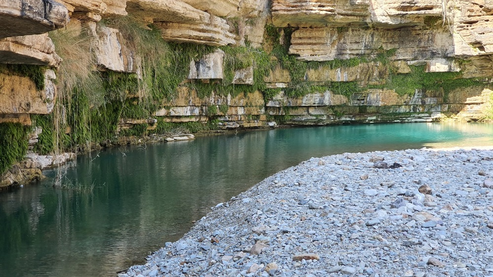
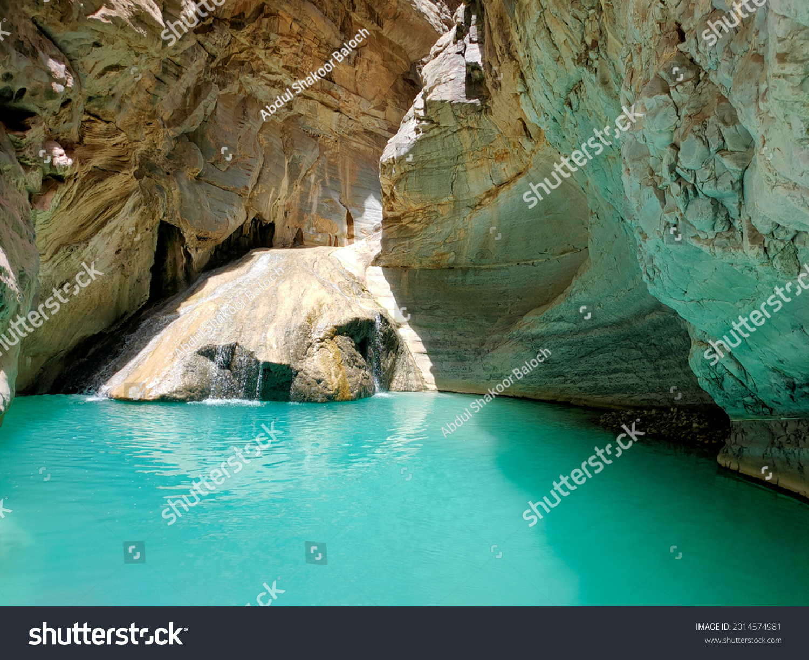

Towns and cities in Balochistan are not as big as compared to other provinces generally due to scarcity of water and abundance of arid and wastelands. Khuzdar, though one of the important cities of Balochistan is a small sized city located in Khuzdar District in Balochistan, Pakistan. The city of Khuzdar is situated on National Highway linking Pakistan, Iran and Turkey. It is about 400 km from Karachi and 300 km from Quetta, both of them being major cities in the country Area: 360 km² Elevation: 1,237 m Population: 182,927 (2017)
Famous Places in khuzdar
|  |  |